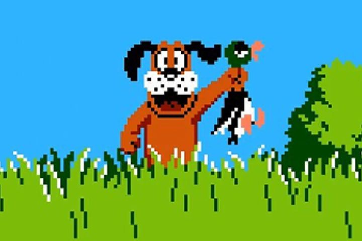
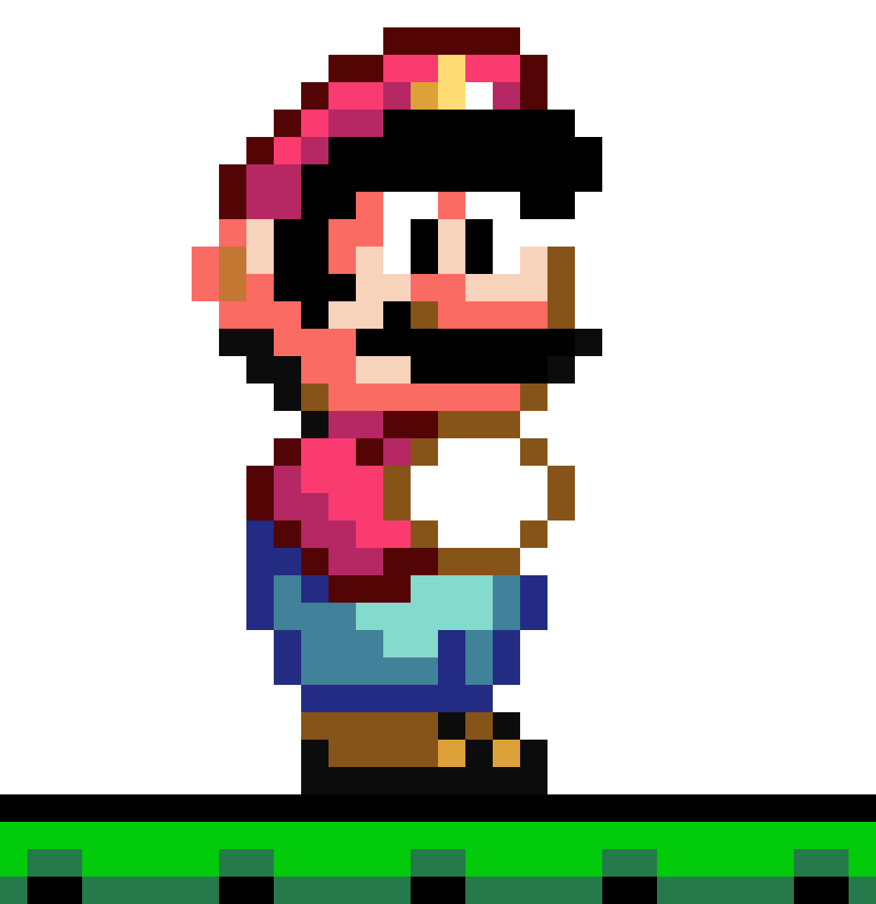
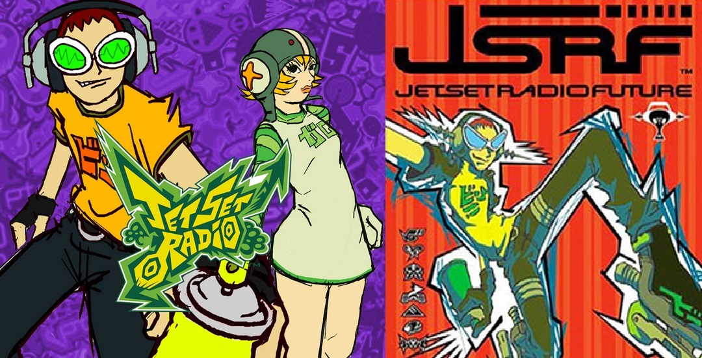
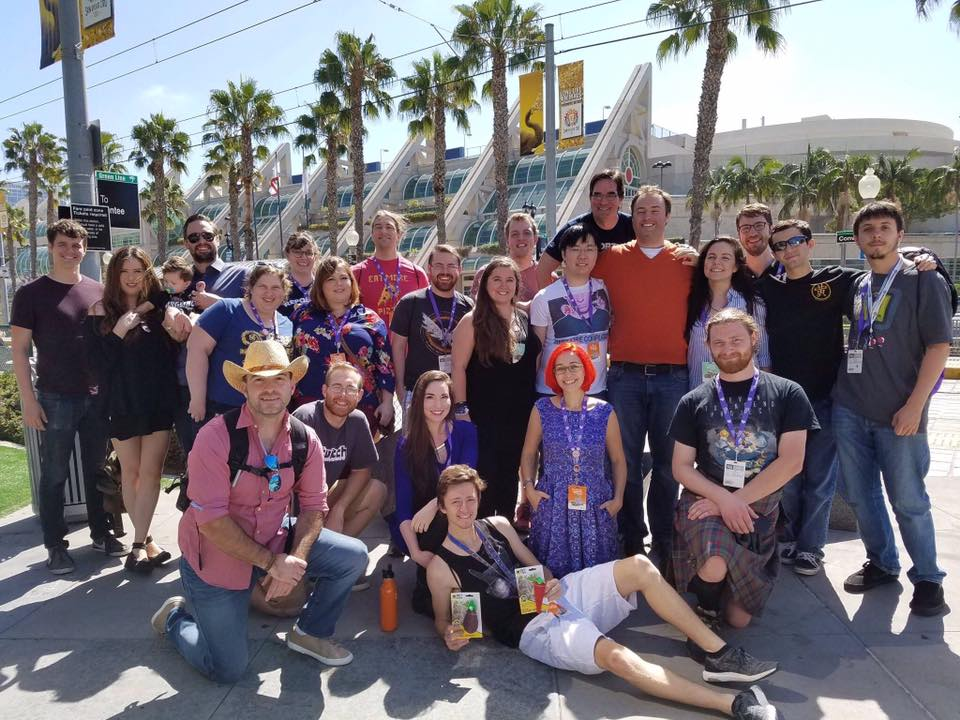

Nintendo Classic
My first memory of playing video games is sitting in the living room with my older sister playing Duck Hunt on the NES.
Super Nintendo
We graduated to a SNES on Christmas of the release year. We played way too much Super Mario World. My dad was EXCELLENT at making Mario fly continuously with his cape equipped. Me on the otherhand, not so much.
XBOX
I hadn't been gifted a new videogame system for years. I still played a lot of SNES and played games a friends' houses.
Christmas of 2001 was one of the only two times in my life I was left speechless. The first time was when I received all the Little Mermaid Dolls for Christmas. This time, I received a shiny new XBOX. This was my first gaming console since the SNES and it was AMAZING.
PC

I thought I played my XBOX (and later XBOX 360) waaay too often. Don't get me wrong, I still enjoyed going outside and reading books on occasion (And still do!). That was until I purchased my first gaming PC with my I earned from my first job. I saved for a long time and bought a Dell gaming PC at Best Buy. I became such a fan of PC gaming after that and in turn, a HUGE Blizzard Ent. fan. I have played every game Blizzard has made, including attempting to play SC and SC2. I still play console games (now on Playstation), but my go-to will forever be PC.
Friends
Gaming has always been a huge part of my life. I have connected and become friends with so many people from around the world. I'm super thankful for my friends! This is a photo of a few of us at Twitchcon in 2016.